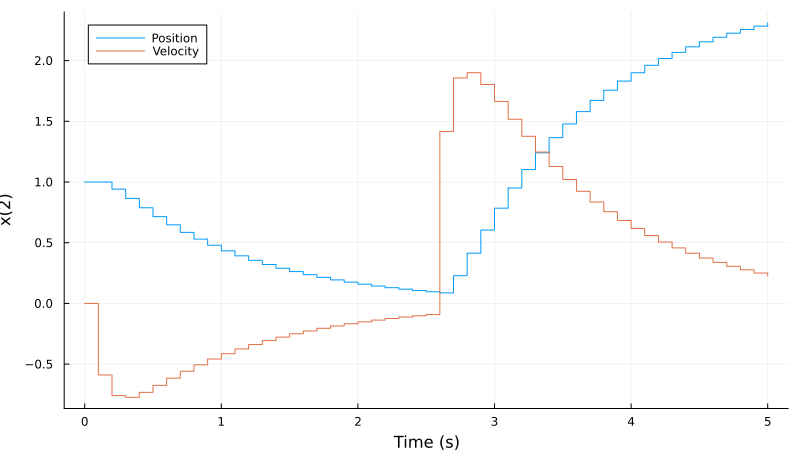
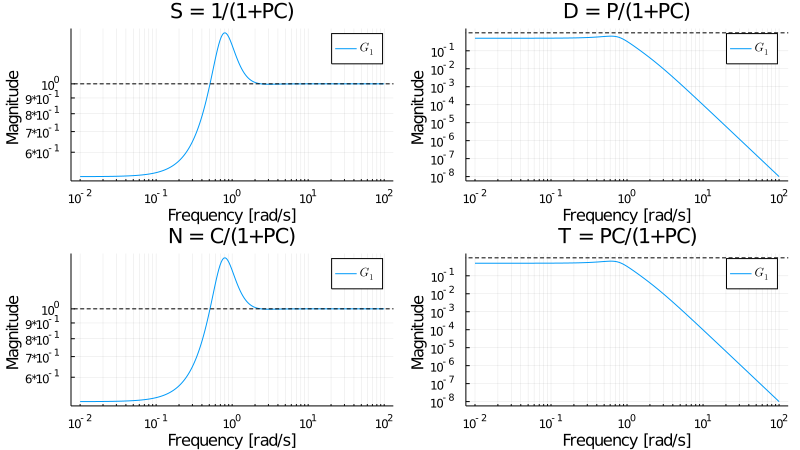
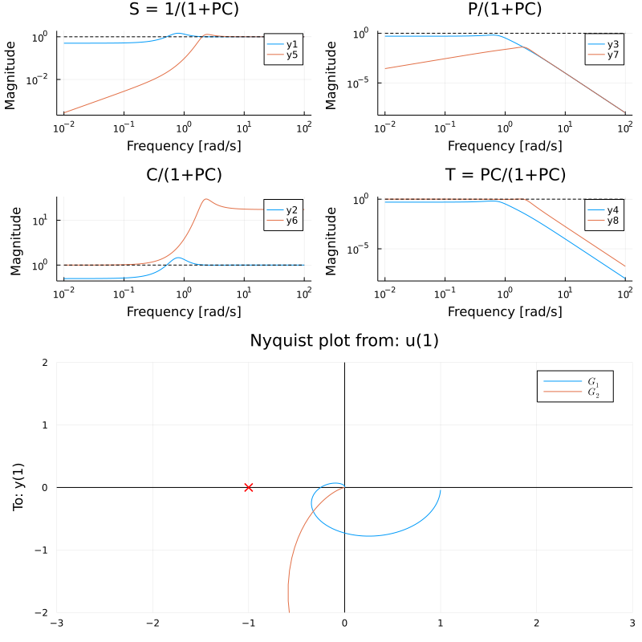
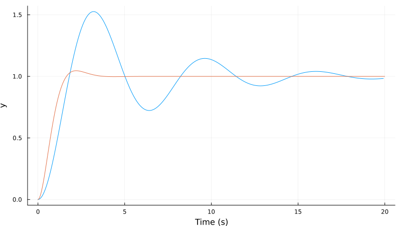
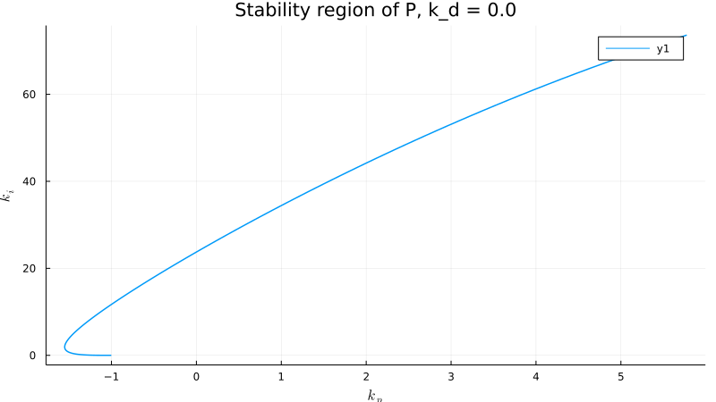
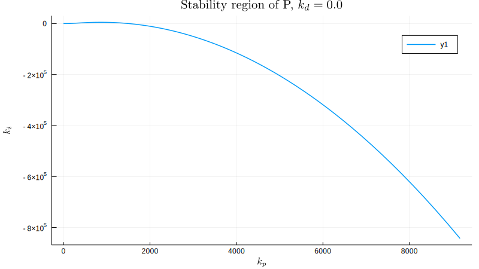
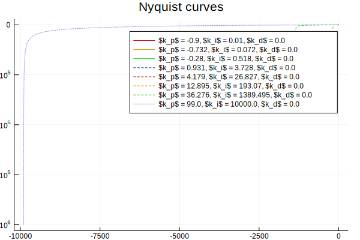
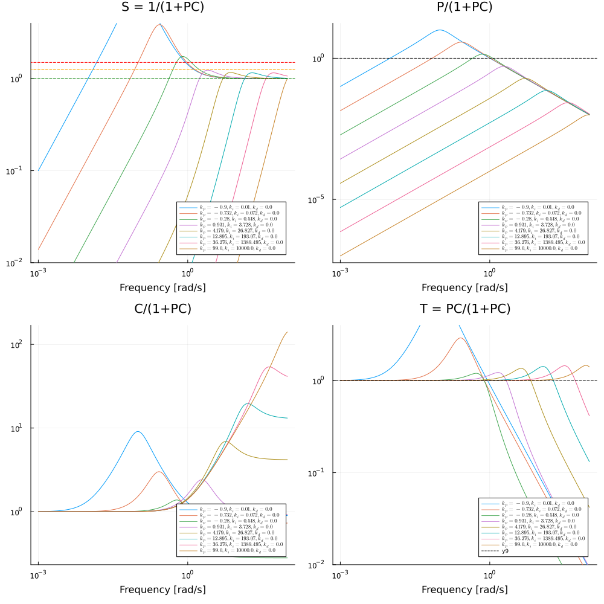
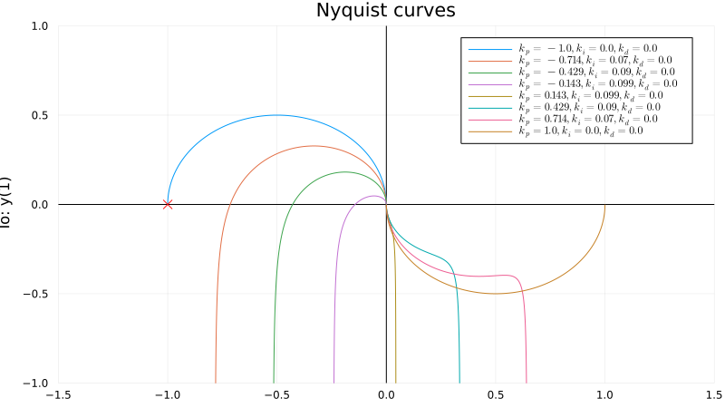
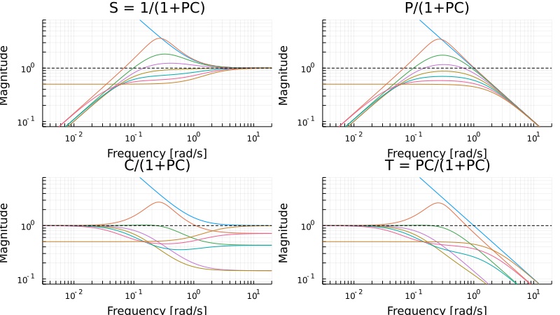

LQR design
using LinearAlgebra # For identity matrix I
using Plots
Ts = 0.1
A = [1 Ts; 0 1]
B = [0 1]' # To handle bug TODO
C = [1 0]
sys = ss(A,B,C,0, Ts)
Q = I
R = I
L = lqr(Discrete,A,B,Q,R) # lqr(sys,Q,R) can also be used
u(x,t) = -L*x .+ 1.5(t>=2.5)# Form control law (u is a function of t and x), a constant input disturbance is affecting the system from t≧2.5
t =0:Ts:5
x0 = [1,0]
y, t, x, uout = lsim(sys,u,t,x0=x0)
plot(t,x', lab=["Position" "Velocity"], xlabel="Time [s]")
PID design functions
By plotting the gang of four under unit feedback for the process
P = tf(1,[1,1])^4
gangoffourplot(P,tf(1))
we notice that the sensitivity function is a bit too high around frequencies ω = 0.8 rad/s. Since we want to control the process using a simple PI-controller, we utilize the function loopshapingPI and tell it that we want 60 degrees phase margin at this frequency. The resulting gang of four is plotted for both the constructed controller and for unit feedback.
using Plots
ωp = 0.8
kp,ki,C = loopshapingPI(P,ωp,phasemargin=60)
p1 = gangoffourplot(P, [tf(1), C]);
p2 = nyquistplot([P, P*C], ylims=(-1,1), xlims=(-1.5,1.5));
plot(p1,p2, layout=(2,1), size=(800,800))
We could also cosider a situation where we want to create a closed-loop system with the bandwidth ω = 2 rad/s, in which case we would write something like
using Plots
ωp = 2
kp,ki,C60 = loopshapingPI(P,ωp,rl=1,phasemargin=60, doplot=true)
p1 = gangoffourplot(P, [tf(1), C60]);
p2 = nyquistplot([P, P*C60], ylims=(-2,2), xlims=(-3,3));
plot(p1,p2, layout=(2,1), size=(800,800))Here we specify that we want the Nyquist curve L(iω) = P(iω)C(iω) to pass the point |L(iω)| = rl = 1, arg(L(iω)) = -180 + phasemargin = -180 + 60 The gang of four tells us that we can indeed get a very robust and fast controller with this design method, but it will cost us significant control action to double the bandwidth of all four poles. 
Advanced pole-zero placement
This example illustrates how we can perform advanced pole-zero placement. The task is to make the process a bit faster and damp the poorly damped poles.
Define the process
ζ = 0.2
ω = 1
B = [1]
A = [1, 2ζ*ω, ω^2]
P = tf(B,A)Define the desired closed loop response, calculate the controller polynomials and simulate the closed-loop system. The design utilizes an observer poles twice as fast as the closed-loop poles. An additional observer pole is added in order to get a casual controller when an integrator is added to the controller.
import DSP: conv
# Control design
ζ0 = 0.7
ω0 = 2
Am = [1, 2ζ0*ω0, ω0^2]
Ao = conv(2Am, [1/2, 1]) # Observer polynomial, add extra pole due to the integrator
AR = [1,0] # Force the controller to contain an integrator ( 1/(s+0) )
B⁺ = [1] # The process numerator polynomial can be facored as B = B⁺B⁻ where B⁻ contains the zeros we do not want to cancel (non-minimum phase and poorly damped zeros)
B⁻ = [1]
Bm = conv(B⁺, B⁻) # In this case, keep the entire numerator polynomial of the process
R,S,T = rstc(B⁺,B⁻,A,Bm,Am,Ao,AR) # Calculate the 2-DOF controller polynomials
Gcl = tf(conv(B,T),zpconv(A,R,B,S)) # Form the closed loop polynomial from reference to output, the closed-loop characteristic polynomial is AR + BS, the function zpconv takes care of the polynomial multiplication and makes sure the coefficient vectores are of equal length
plot(step(P))
plot!(step(Gcl)) # Visualize the open and closed loop responses.
gangoffourplot(P, tf(-S,R)) # Plot the gang of four to check that all tranfer functions are OK 
Stability boundary for PID controllers
The stability boundary, where the transfer function P(s)C(s) = -1, can be plotted with the command stabregionPID. The process can be given in string form or as a regular LTIsystem.
P1 = s -> exp(-sqrt(s))
f1, kp, ki = stabregionPID(P1,exp10.(range(-5, stop=1, length=1000))); f1
P2 = s -> 100*(s+6).^2. /(s.*(s+1).^2. *(s+50).^2)
f2, kp, ki = stabregionPID(P2,exp10.(range(-5, stop=2, length=1000))); f2
P3 = tf(1,[1,1])^4
f3, kp, ki = stabregionPID(P3,exp10.(range(-5, stop=0, length=1000))); f3  
PID plots
This example utilizes the function pidplots, which accepts vectors of PID-parameters and produces relevant plots. The task is to take a system with bandwidth 1 rad/s and produce a closed-loop system with bandwidth 0.1 rad/s. If one is not careful and proceed with pole placement, one easily get a system with very poor robustness.
P = tf([1.],[1., 1])
ζ = 0.5 # Desired damping
ws = exp10.(range(-1, stop=2, length=8)) # A vector of closed-loop bandwidths
kp = 2*ζ*ws .- 1 # Simple pole placement with PI given the closed-loop bandwidth, the poles are placed in a butterworth pattern
ki = ws.^2
ω = exp10.(range(-3, stop = 2, length = 500))
pidplots(
P,
:nyquist;
kps = kp,
kis = ki,
ω = ω,
ylims = (-2, 2),
xlims = (-3, 3),
)
pidplots(P, :gof; kps = kp, kis = ki, ω = ω, legend = false)
# You can also request both Nyquist and Gang-of-four plots (more plots are available, see ?pidplots ):
# pidplots(P,:nyquist,:gof;kps=kp,kis=ki,ω=ω); 
Now try a different strategy, where we have specified a gain crossover frequency of 0.1 rad/s
kp = range(-1, stop=1, length=8) #
ki = sqrt.(1 .- kp.^2)/10
pidplots(P,:nyquist,;kps=kp,kis=ki,ylims=(-1,1),xlims=(-1.5,1.5))
pidplots(P,:gof,;kps=kp,kis=ki,legend=false,ylims=(0.08,8),xlims=(0.003,20)) 
Further examples
See the examples folder as well as the notebooks in ControlExamples.jl.
See also the paper introducing the toolbox with supplementary material.